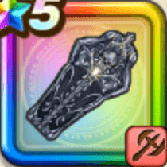

堕天使の棺
攻略班 9.0点 / ダークフォースデッド・セメタリーエターナル・サルベーション鎮魂のダークフォースアンチェインアンリーズンアンラック
くわしい特徴
【レベル別習得スキル】 Lv1【ドラゴン】攻撃力+5 Lv1【ゴドハン】さいだいHP+10 Lv10ダークフォース（消費MP：16）ドルマ・ジバリアのフォースを得る。両属性の耐性を上げ、一部の攻撃に敵ごとに有利な属性を付加する(効果4ターン) Lv20デッド・セメタリー（消費MP：43）敵全体にまれに直撃する威力400%のジバリア属性体技ダメージを与える。このスキルで敵を倒す毎にMPを10回復する Lv30エターナル・サルベーション（消費MP：55）敵1体にまれに直撃する999%体技ダメージを与え、たまに斬撃・体技耐性を下げる。自身の行動順が遅いほど会心の一撃発生率UP(最大+15%) Lv33ドラゴン系へのダメージ+5% Lv36エレメント系へのダメージ+5% Lv40攻撃力+12 Lv50鎮魂のダークフォース（消費MP：13）戦闘開始時にドルマ・ジバリアのフォースを得る。両属性の耐性を上げ、一部の攻撃に敵ごとに有効な属性を付加する(効果6ターン) Lv50アンチェイン（消費MP：7）戦闘中自身が会心の一撃を発生させるとMPを7消費し2ターンの間自身のこうげき力を上げる Lv50アンリーズン（消費MP：最大MPの4%）戦闘中自身が直撃を発生させると最大MPの4%を消費し2ターンの間自身に限界突破を付与しランダムな敵1体に負の限界突破を付与 Lv50アンラック（消費MP：5）戦闘中自身による会心の一撃と直撃の同時発生時MPを5消費しランダムな敵の呪文・ブレス・斬撃体技いずれかの耐性を2ターンの間下げる 【限界突破スキル】 1凸スキルの斬撃・体技ダメージ+7% 2凸スキルの斬撃・体技ダメージ+7% 3凸スキルの斬撃・体技ダメージ+7% 4凸スキルの斬撃・体技ダメージ+7%